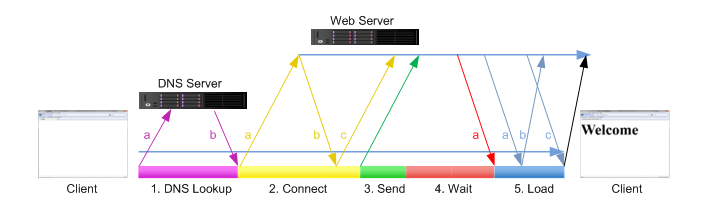
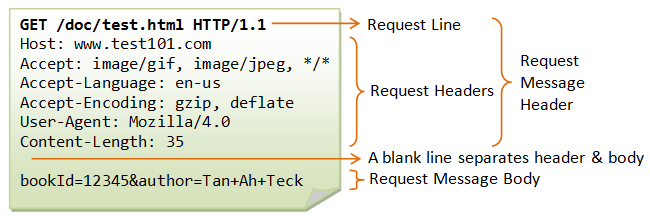
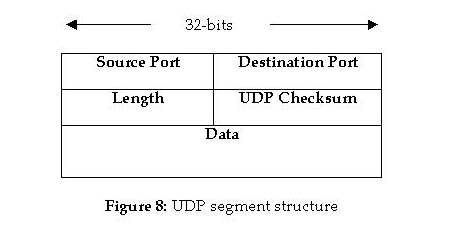

Computer Networks
General
- Documents reflecting the activities of the internet community are called RFCs (Request for Comments). (e.g. original TCP Standard from 1981: https://www.rfc-editor.org/rfc/rfc793.html).
Connections
- Connection oriented
- First a connection is established, then data can be send. A server must listen to connection requests.
- TCP/IP protocol suite
- Family of ~ 500 protocols forming the basis of communication on the internet (e.g. IP, ICMP, ARP, UDP, TCP, IGMP, …).
line switching vs. packet switching Leitungsvermittelte Netze vs. paketvermittelte Netze e.g. Telefon vs. Internet
Packet switching is either based on datagrams (connectionless) or on virtual connections.
Routing vs. Bridging vs. Switching
- Routing allows communication over separated networks.
- Bridging connects multiple network segments (same network) as if they were one single network (Data link layer 2). It basically forwards a packet to the other network segment if necessary (or not if not necessary, avoiding traffic).
- Switching is done (e.g by an Ethernet switch or a Linux bridge) on layer 2. A switch holds a mapping of MAC addresses to ports.
What is routing?
- In a packet switching network routing refers to the process of forwarding packets across multiple networks via different network nodes.
- Usually uses routing tables containing routes to network destinations.
Distributed Systems
Introduction
Definition: A Distributed System is a system of heterogeneous, independent computers appearing to the user as one single coherent system. 1
- The internal system (hardware, operating systems) is hidden from the user.
- Distributed systems should be easy to expand and scale.
- Distributed systems should make resources easily accessible.
Why create Distributed Systems?
- Make remote resources (printer, storage, networks, etc.) available to a user easily.
- Distributed systems scale nicely (just add a new data center).
- Fault tolerance (multiple data centers in different locations).
- Low Latency (have a node nearby).
A Distributed System that looks like one computer is called transparent (Distribution Transparency).
What types of hiding (transparency) resources are there?
- Access : Hide how a resource is accessed.
- Location : Hide where it is.
- Migration : Hide that it might have been moved.
- Relocation : Hide that it might have been moved while in use.
- Replication : Hide that it has been replicated.
- Concurrency : Hide that it might be shared with other users.
- Failure : Hide failure and recovery.
Transaction follow the ACID-principle:
- Atomic: appear as indivisible
- Consistent: transactions don't violate system invariants. For example replicated databases might become inconsistent.
- Isolated: Concurrent transactions don't interfere with each other.
- Durable: Changes are permanent.
A distributed system can be organized as a middleware layer extending over multiple machines allowing applications the same interface.
Scalabilty
- size
- distance
- administrative
Scaling Techniques
- hiding communication latencies
- asynchronous communication
- reduce overall communication
- distribution
- Example: DNS, name resolution is distributed across several machines
- replication
- cashing
- leads to consistency problems
Various topics
Interface Definition Language (IDL) Remote Procedure Call (RPC)
Virtualization Middleware Server/Client vs. Peer to peer
Processes
Threads
- Using User-Level-Threads is fast.
- User-Level-Threads are all halted when a blocking system call is made.
- Using kernel threads is expensive.
- In between: Lightweight Processes (LWPs)
Multithreaded Clients
For example Web browsers. Communictaion delays should be hidden from the user. After initiating a communication something else is typically happening (e.g. building up a web page).
Multithreaded Servers
A concurrent server passes a request to a separate thread or another process.
A superserver (e.g. inetd) listens to multiple ports and then
forks a process to handle it.
Communication
Two remote processes can communicate
- peer-to-peer: shared resource for data exchange
- client-server: client requests a resource from server
Client Server Model
Two processes might interact
- sockets
- remote procedure calls (RPCs)
HTTP
Client to server request

- Establish TCP connection.
- Send: this is the HTTP request.
- The Web Server processes the request and sends back the data.
GET command

Notes:
- "GET /" means requesting the front page of the web site.
Command line browser Lynx
lynx -head -dump http://www.apache.org
Common Gateway Interface protocol (CGI)
Used to dynamically create web content. The content is e.g. created with a perl script.
Obsolete with JavaScript.
IP Addresses, Subnetting, NAT
- 4 octets
- slash notation: 192.168.1.0/24 means 24 1s in network mask (class C network)
Subnetting
- Break a network into subnets
- broadcast: Who is 192.168.1.73 ? (doesn't cross routers)
- use small networks to limit traffic
- Network address: e.g. 192.168.1.0
- Host address (computer in a network) e.g. 192.168.1.10
- The subnet mask, masks out the part of the IP address that represents the network address, e.g. Subnet mask: 255.255.255.0 tells us that the first 3 bytes of e.g. 192.168.1.25 are the network address.
- Create subnets:
- Let's say we want 3 subnets.
- 255.255.255.0 1 network, 254 hosts (all 0, all 1 is reserved for network id and broadcast id)
- 255.255.255.128 2 networks, 126 hosts each
- 255.255.255.192 4 networks, 62 hosts each
- A, B, C class networks have the following default subnet masks:
- 255.0.0.0
- 255.255.0.0
- 255.255.255.0
NAT
Network Address Translation
One public IP address servers multiple private hosts.
- Router: 60.202.151.70
- various devices are connected to the Router with private IP addressses (192.168.0.X)
- How does an IP packet find it's way to the private host via the Router?
- Routing Table in the Router
- IP packets go through the routing table.
CIDR
Classless Inter-Domain Routing with Variable Length Subnet Masks (VLSM).
- IP addresses are wasted due to subnetting.
Issues
Switching Loop
A switching loop, in the context of networking, is a situation where data packets within a network become trapped in an endless loop, continuously circulating between network devices. This can happen when there are redundant or misconfigured connections in a network, causing packets to be forwarded indefinitely. Switching loops can lead to network congestion, degradation of performance, and even network outages. They are typically avoided and mitigated through the use of loop prevention mechanisms like Spanning Tree Protocol (STP) in Ethernet networks.
Broadcast Storm
A broadcast storm in networking occurs when a large number of broadcast packets flood the network continuously. ARP (Address Resolution Protocol) is a common source of broadcast packets in these storms as they broadcasted to everyone (target address: FF:FF:FF:FF:FF:FF). The flooding happens when there is a switching loop in the network and the ARP packets circle continuously.
Spanning Tree Protocol (STP)
Spanning Tree Protocol (STP) is a network protocol designed to prevent and manage switching loops in Ethernet networks. Switching loops can lead to network congestion and instability, and STP's primary function is to create a loop-free logical topology within a network. Here's a brief overview of how STP works:
- Bridge ID and Root Bridge:
- Each network bridge (Ethernet switch) in the network is assigned a unique Bridge ID, consisting of a Bridge Priority value and the switch's MAC address.
- The switch with the lowest Bridge ID becomes the Root Bridge, serving as the reference point for the entire spanning tree.
- Bridge Protocol Data Units (BPDU):
- STP relies on Bridge Protocol Data Units, or BPDUs, which are special control messages exchanged between switches.
- BPDUs contain information about the sending switch, including its Bridge ID, the ID of the Root Bridge, and the cost to reach the Root Bridge.
- Root Bridge Election:
- Initially, all switches assume they are the Root Bridge and broadcast BPDUs with their own Bridge ID.
- When a switch receives a BPDU from another switch, it compares the received Root Bridge ID with its own. If the received ID is lower, it acknowledges the other switch as the Root Bridge and stops broadcasting its BPDUs. If not, it continues broadcasting its BPDUs.
- Building the Spanning Tree:
- Once the Root Bridge is established, each switch calculates the best path to reach the Root Bridge.
- Switches select one of their ports as the Root Port, which is the port through which they can reach the Root Bridge with the lowest cost.
- The other ports on each switch go into a blocking state to prevent loops. These ports are in the Discarding state, which means they don't forward data frames.
- Loop Prevention:
- If there are multiple paths to the Root Bridge, STP determines the best path by considering the path cost, which is based on the link speed or bandwidth. Lower cost paths are preferred.
- STP continuously monitors the network for changes. If a link failure or new link is detected, STP recalculates the spanning tree to adapt to the changes and prevent loops.
- Convergence:
- STP ensures network convergence, meaning that after the spanning tree topology is established, the network is stable and loop-free.
In summary, STP works by electing a Root Bridge and calculating the best paths for all switches to reach it, while blocking redundant links to prevent switching loops. It continuously monitors the network for changes and adapts the spanning tree as needed to maintain a loop-free topology. The protocol is part of the IEEE 802.1D standard and has variations like Rapid Spanning Tree Protocol (RSTP) and Multiple Spanning Tree Protocol (MSTP) to improve convergence times and support multiple VLANs.
TCP and UDP
2 The Internet Protocol (IP) specifies how Information is exchanged on the Internet between Routers and Hosts. (The path the information takes is the route).
The Transmission Control Protocol (TCP) and the User Datagram Protocol (UDP) on the other hand are used to exchange information between processes (not between hosts and routers) running on different hosts. So they both use port numbers to identify these processes.
So TCP and UDP are logically located on a higher communication layer (above IP).
TCP is connection oriented, byte stream based, if packets get lost they will be resent. UDP is a connectionless service without handshake mechanisms using datagrams.
TCP establishes a connection between endpoints called sockets (ip address + port). A TCP connection is identifies by a quadrupel:
(Source IP, Source Port, Destination IP, Destination Port)
How the protocol works
Connection establishment
- Client sends a SYN packet (SYN bit set in header) with a (random) sequence number s to the server.
- The server responds with SYNACK incl. sequence nr. s+1 (or TCP-RST if the port is not open).
- Client sends an ACK packet with sequence nr. s+1
Client Server | Client initiates connection | | by sending a TCP SYN packet | | with sequence number C | |----------------------------------->| | | | Server receives the SYN packet | | with sequence number C and | | sends SYN-ACK packet back | | with sequence number S and | | ACK number C+1 | |<-----------------------------------| | | | Client receives the SYN-ACK | | packet with sequence number S | | and sends an ACK packet | | with sequence number C+1 and | | ACK number S+1 | | to acknowledge the connection | |----------------------------------->| | | | Connection Established | | |
TCP Retransmit
The data stream send via a TCP connection is chopped into numbered packets (sequence nr.). If a packet gets lost it has to be retransmitted.
Connection termination
Specifications
Structure of a TCP-Segment:

Establishing a TCP-Connection:
Synchronization Segments are being transmitted. Three ways handshake.
- Client: send SYN-Segment, with initial sequence number (client_isn)
- Server: send SYNACK-Segment, ACK Number: client_isn + 1, Seq Number: server_isn
- Client: send Segment with SYN-Bit 0, ACK Number: server_isn + 1
Structure of a UDP-Segment:

Sockets
- There are two kinds of sockets: Stream sockets (TCP), Datagram sockets (UDP).
- Sockets connect two devices. The are communication endpoints.
- Abstraction above the TCP layer.

Uniquely identified by
- ip address
- end-to-end protocol (TCP or UDP)
- port number
When you create a socket you get something like a file handle. The operations are different though.
As a client you connect to a server.
If your a server you listen, i.e. wait for clients, and accept to connect to a client.
Once you have a connection you can send and receive data (like write and read with a file).
Socket Operations
- socket (address_family, type, protocol) : Create a new endpoint, returns socket
- bind (sockid, &addrport, size) : Attach a local address to a socket
- listen (sockid, MAX_LENGTH) : Accept connections, non-blocking
- accept () : Block until request arrives, returns socket
- connect (sockid, &serverAdd, size) : Open connection to server (as a client), blocking
- send (sockid, msg, size, flags) : send msg, blocking
- receive (sockid, recvBuf, size, flags) : receive data, blocking
- close (sockid) : Close the connection
Notes:
- A socket is an index into the socket table.
lwip Library
- Use raw/native API without operating system.
- Event oriented using callback functions.
NFS
SMB/CIFS (SAMBA)
Searches for shared Files and Printers using Broadcast.
Configuration on Linux:
/etc/samba/smb.conf
Security
TLS / SSL
- asynchronous exchange of symmetric key
- authenticate
OSI Model
- Layer 7 - Application Layer: (HTTP, FTP, SSH, etc.)
- Layer 6 - Presentation Layer:
- Layer 5 - Session Layer:
- Layer 4 - Transport Layer: ports (UPD, TCP, etc.)
- Layer 3 - Network Layer: packets, routing, ip addresses (IP, etc. )
- Layer 2 - Data Link Layer: frames, data integrity (CRC, parity bits, etc.) (MAC, etc.)
- Layer 1 - Physical Layer: signals, cables, etc.
Web Programming
Client-Server Application using HTTP where the client is a web browser.
- Thin Client : Data processing is done only on the server.
- Rich Client : The client does more than just displaying the html-pages.
- Static content : html- pages
- Dynamic content : content is generated on demand, e.g. JavaScript code generates content on the client side.
- Common Gateway Interface (CGI)
- Session ID : Is used to uniquely identify the requesting client program.
- URL-Rewriting
Technologies
ASP.NET
Model View Controller Pattern.
Java EE (Java Enterprise Edition)
Collection of specifications for web based business applications. Can only be implemented in Java.
Ajax
(Asynchronous JavaScript and XML)
jQuery
WIFI
General
- IEEE 802.11 based (a, g, n, ac, ax - efficiency) (IEEE 802.3 is for Ethernet)
- 802.11 is only about Layer 1 (physical) and Layer 2 (data link: frames) of the OSI - model.
- PHY (physical layer)
- 802.11n - High Troughput - big step
- 2.4 GHz problems:
- channels overlap, effectively only 3 channels that don't overlap (1, 6, 11)
- half duplex
- management (negotiate connections), control (avoid collisions), data frames
Frames
Frames frame the payload, i.e. bits before or after the payload. E.g. a header before and some kind of data integrity info at the end.
- wifi protocol analyzers: frame and packet decoding
Access Points
- The only layer 2 element in a WLAN.
Service is advertised, typically every 100ms.
- Switch: Layer 2 (MAC Addresses)
- Router: Layer 3 (IP Addresses)
Topology
- IBSS (Independent Base Service Set (ad-hoc)
- Direct communication between 2 hosts.
- BSS (Basic Service Set)
- Typical use. An Access Point makes the connection to a wired network.
- EBSS (Extended Service Set
- Multiple Access Points.